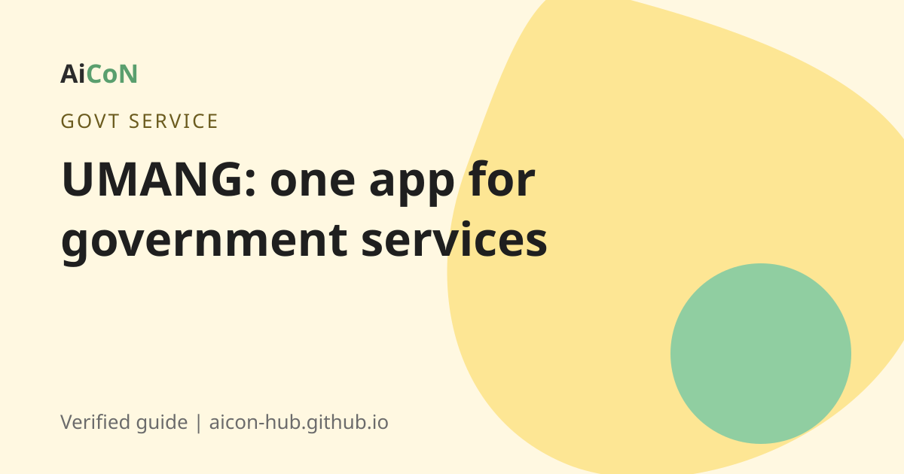

UMANG app: one app for 2,500+ government services
UMANG is the Government of India's single app for citizen services. About 2,575 services from the Centre and the states are on it. It is free. Register once with your mobile number and use many departments from one place.

What is UMANG?
UMANG stands for Unified Mobile Application for New-age Governance. It is an official Digital India platform under the Ministry of Electronics and IT (MeitY). It works as an app and on the web at umang.gov.in.
Think of it as a front door. Instead of finding a separate website for each department, you open UMANG and search for the service.
How big is it now?
A Government press release (PIB) says that as on 31 July 2026, about 2,575 services were available on UMANG. Of these, 880 are from the Central Government and 1,695 are from State Governments. The same release says UMANG has more than 11 crore registered users. In March 2026 the figure was 2,446 services, so the list keeps growing.
What can you do on it?
- Check your EPFO balance and passbook.
- Use PAN-related services.
- Open your DigiLocker documents.
- Find scholarship services and apply.
- Pay utility bills and use gas, pension and other services.
- Use services of your own state, if your state has added them.
Not every state or department has every service. Search by name to see if yours is there.
How to start, step by step
- Install the app only from Google Play or the Apple App Store. Check that the developer is MeitY, Government of India. Or open umang.gov.in.
- Choose register and enter your mobile number.
- Enter the OTP sent to your phone.
- Set a 4-digit MPIN. You will use it to log in next time.
- Search for the service you want, for example "EPFO".
- Follow the steps inside the service. Some services send you to the department's own page and may ask for extra details, such as your UAN for EPFO.
Cost, eligibility and limits
| Price | Free to download and use. Some services inside, such as bill payments, have the normal charge of that service. |
|---|---|
| Who can use it | Any person in India with a mobile number. |
| Languages | The app supports many Indian languages. Check the language option inside the app. |
| Limits | Some services open the department's own site. Not all services of every state are on it. |
Stay safe
- Fake lookalike apps exist. Install only the app whose developer is MeitY, Government of India.
- No real government service will ask for your OTP on a phone call.
- Never share your MPIN with anyone.
Frequently asked questions
Is UMANG free?
Yes. The app is free. Some paid services like bill payments charge their usual amount.
Do I need Aadhaar?
Registration uses your mobile number and OTP. Some services inside may ask for Aadhaar or other documents.
Does UMANG have Kerala services?
State services are added by each state. Search the app for the service you need.
Is it the same as DigiLocker?
No. DigiLocker stores your documents. UMANG gives access to many services and can open your DigiLocker documents.
Can I use it on a computer?
Yes. Use the web portal at umang.gov.in.
Sources: UMANG portal, PIB release (31 July 2026 figures), PIB release (March 2026). Checked 6 October 2026.